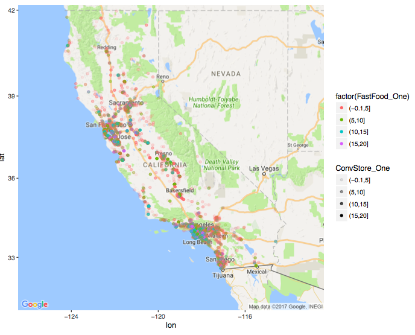
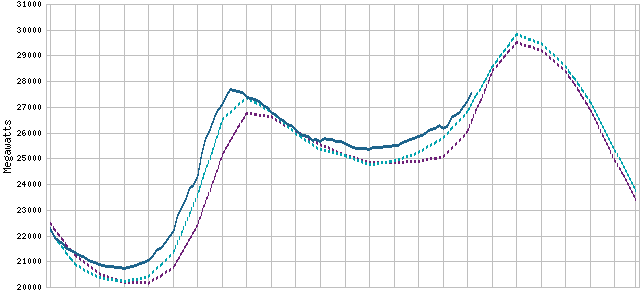

Research
My research mainly focuses on causal inference and machine learning. More specifically:
Heterogeneous causal inference.
Recommendation System on large-scale and high-dimensional electronic healthcare databases.
Energy efficiency
Other Interesting Applied Projects
Recommendation System of Optimized Matchmaking in Health Care

In this project, we applied and investigated Recommendation System algorithms to increase the likelihood of long-lasting relationships, preventive medicine and quality of follow ups in health care, and implemented different machine learning algorithms to develop automated mediation service. [Link]
Heterogeneous Bay Bridge Impacts on Bay Area Rapid Transit (BART) Ridership
In this project, we investigated heterogeneous effect from new Bay Bridge on BART ridership based on hour and route level dimensions using some causal inference methods; in addition, we investigated new Bay Bridge social impact by cost and benefit analysis from traffic congestion and air pollution aspects. To better understand the transit pattern, we visualized the throughput of the BART among 45 stations, from 2011 to 2015, with more than 40 million ridership record. The motion chart could be found on my github
{kind=link}
kaggle competition called Quora Question Pairs
The goal of this competition is to predict which of the provided pairs of questions contain two questions with the same meaning. Many people ask similarly worded questions on Quora. Multiple questions with the same intent can cause seekers to spend more time finding the best answer to their question, and make writers feel they need to answer multiple versions of the same question. Canonical questions provide a better experience to both active seekers and writers. Currently, Quora uses a Random Forest model to identify duplicate questions. In this competition, we are tasked with predicting whether a pair of questions are duplicates or not, and submitting a binary prediction against the logloss metric.
This competition starts in April and ends in June. There are in total three months to work on this competition. There are in total 3394 teams competing in this competition. Our team is called BAAII and it currently ranks the 349th on the public leaderboard and 355th on the private leaderboard, which is at top of all the teams. Results and webpage can be found here.
Policy Causal Impact on California Soda Market Consumption Pattern

This project mainly mined and inference the causality between the policy and the soft drink market consumption in California using some causal inference methods. We investigated causal inference method (triple difference approach) based on the all California supermarkets household level consumption’s with transaction details.
Energy Prediction of Peaking Power Plant in California

We predicted the demand of power to reduce the cost of building unnecessary power plants using super- vised learning methods and applied and investigated multiple machine learning algorithms (e.g. OLS, ridge regression, Lasso, decision tree, random forest model) in pySpark to process the large database.